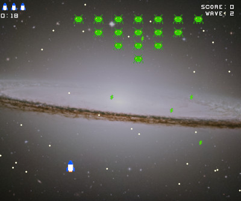

Galaxy Invaders

This is a simple game that is sort of a Space Invaders / Galaga clone
but the enemies can be scripted using Lua. I made this just to test my
knowledge of the Lua programming language and if I can integrate it
into a C program (like a simple game). There are 15 waves and a final boss
fight along with a bunch of randomly generated waves after that
(though a lot of those are pretty much downright unfair to play, be warned).
Source code available at
here under the MIT
license.
If for whatever reason you wish to mod the game, be warned that I did not
include proper error checking / handling and a lot of stuff is just
hacked together and perhaps not particularly well designed.
Web Documentation
Game powered by Lua

Logo Credit: Copyright © 1998 Lua.org. Graphic design by Alexandre Nakonechnyj.
Controls:
- Arrow Keys to move around
- Space to shoot aliens
Download for Linux
Download for Windows